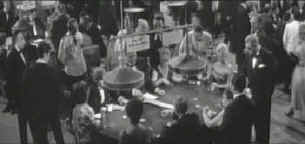

|
Any
Number Can Win/B+,D- |
|
Image/1962/103m/ANA
2.35/BW |
There's no indication of aspect ratio on the DVD package, so
when I started the projector in 4:3 and immediately realized
this was a widescreen anamorphic transfer, I was jubilant. The
celebratory mood was short-lived. What a shame! Such an elegant
film production has been trashed in transfer to DVD. It seems
hard to believe that the existing elements for Any Number Can
Win have such consistently soft focus, but that's exactly
the problem that makes the DVD close to unwatchable.
Fortunately, the film is so riveting, that despite the transfer
travesty, it is still an entrancing experience.
 |
| Charles
and Francis survey the casino. ©MGM |
On his release from prison, Charles
arrives home to find Paris changed. The home he left nestled in
the trees and shrubs of the suburbs is now lost in a jungle of
nondescript apartment towers. His wife waits for him faithfully
and dreams of a peaceful retirement together. Charles realizes their
nest egg is not enough to give them freedom in the style he wants.
One last job will set them up with enough to live out their lives in
style. The target is the big casino in Cannes.
When Charles finds that partner for the
caper is no longer available, he recruits a
young, former cell mate to pull off
the heist. Francis, handsome and footloose, gets his innocent brother-in-law
to act as the chauffer. The contrasts in characters is
fascinating, from Francis's amorality to Charles' practicality
and Louis's loyalty.
The job is as simple and direct as Charles.
In order to gain entry into the casino's vaults, Francis must use
his good looks to seduce his way behind the hotel stage. That's a
lot of the fun of Any Number Can Win. Francis, the street smart
twenty-seven-year -old kid, is seduced by playing at the lifestyle of a
rich guy in Cannes, just as the viewer is seduced by the elegant
locales. There are some excellent surprises and detours before
the heist.
Jean Gabin is solid and no-nonsense as Charles. He knows what he
wants and he moves toward his goal with the assurance of a veteran
. The rough, tough Gabin
and the cat-like Alain Delon provide Any
Number Can Win with a perfect pair of stars. The seductive production works on many levels.
It captures Cannes glamour in elegant strokes, with
widescreen compositions unfolding the lavish setting without
feeling like a travelogue.
The heist is a beauty of simplicity.
Tension mounts in reasonable fashion, the players sweat real
sweat. Director Henri Verneuil has a great sense of timing and
his cutting makes sense all the time.
Aside from the mangled focus, Any
Number Can Win is provided with a removable yellow English
subtitle translation that accurately captures the French idiom.
Black and white contrast is adequate, but a little more punch
would have added to the glamour of the French Riviera setting.
The mono sound is clean and the music without distortion.
|
|
The Feature
Archive has articles ranging from John
Ford to Blonde
Bimbos, Akira
Kurosawa and Frank
Darabont.

Click on the image above to access The
Heistmasters, a view of the best directors of the
heist.
Check out the Movie
Poster Archive for short bios and images of
Susan Hayward, Kirk Douglas, Katharine Hepburn and many more.
This month's featured star is Clark
Gable.

DVD Verdict
They
may be judgmental, but that's the
point, isn't it. Lots of DVD reviews
plus news and more.
Click on the link to visit the
judge's chambers.
Home
Theater Reference Reviewing System

When you read a DVD review it's of utmost importance to
know what equipment is being used to evaluate quality. Click on
the projector to find out more.
 Direct
from the corridors of the Home
Theater Forum, Home Theater Talk is
the newest place on the Net to
discuss everything home theater.
Friendly atmosphere and
knowledgeable folks are the secret
ingredients. Direct
from the corridors of the Home
Theater Forum, Home Theater Talk is
the newest place on the Net to
discuss everything home theater.
Friendly atmosphere and
knowledgeable folks are the secret
ingredients.
Imaging
Science Foundation
The Imaging Science Foundation promotes
proper standards in home theater viewing. ISF trained
technicians offer monitor calibration services to consumers. The
difference in a properly calibrated monitor can be
astounding. Click on the image to find an ISF member near you. |